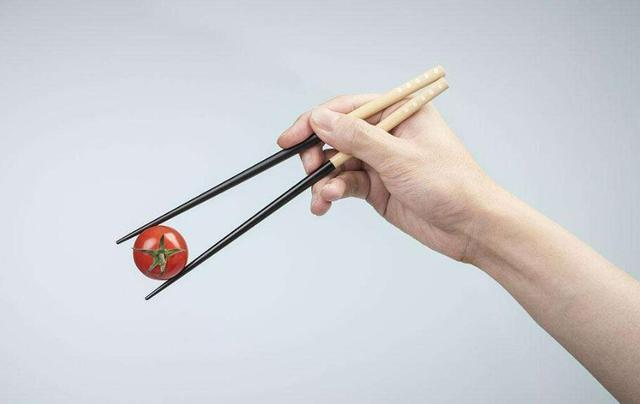
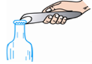
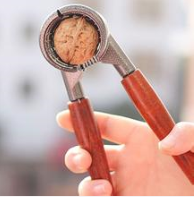
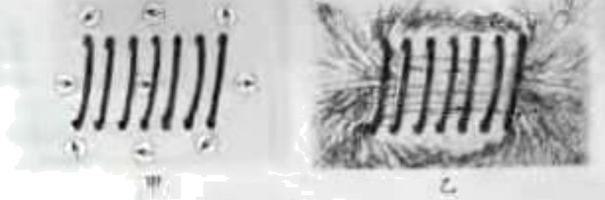
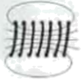
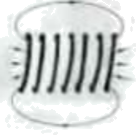
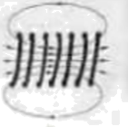
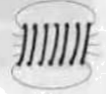

2021年北京市中考物理试题 · 选择题 第6、7、8、9、10题
6. 图示的四种工具中，正常使用时属于费力杠杆的是（ ）
A. 园艺剪B.

筷子C.

瓶盖起子D. 
核桃夹7. 下列四个实例中，能够使蒸发加快的是（ ）
A. 将水果放在低温冷藏柜中
B. 将新鲜的蔬菜封装在保鲜袋中
C. 给播种后的农田覆盖地膜
D. 将新采摘的辣椒摊开晾晒在阳光下
8. 电给我们的生活带来了极大的便利，但不正确用电也会带来很大的危害，甚至会危及生命。安全用电是每一位公民的必备素养。下列做法中不符合安全用电原则的是（ ）
A. 在家庭电路中安装保险丝或空气开关
B. 在未断开电源开关的情况下更换灯泡
C. 不接触低压带电体，不靠近高压带电体
D. 及时更换达到使用寿命的插座、导线和家用电器
9. 在体育课上，小康用胳膊将排球向上垫起后，排球上升过程中运动得越来越慢。下列说法中正确的是（ ）
A. 排球在脱离胳膊后能继续上升，是由于排球所受的重力小于排球的惯性
B. 排球在脱离胳膊后的上升过程中，受到方向向上的力
C. 排球在脱离胳膊后的上升过程中，重力势能逐渐减小
D. 排球在脱离胳膊后的上升过程中，动能逐渐减小
10. 在探究通电螺线管的磁场特点时，通电螺线管在某状态下的两个实验现象如图所示，其中小磁针（黑色一端为N极）静止时的指向情况如图甲所示。铁屑静止时的分布情况如图乙所示。图中能正确用磁感线描述这两个实验现象的是（ ）

A.

B. 
C.

D. 